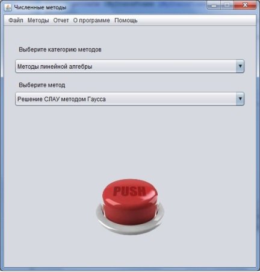
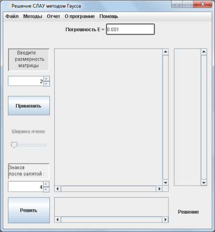
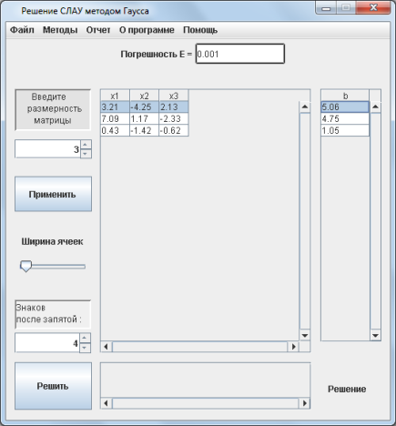
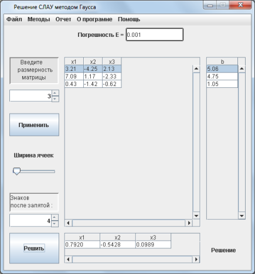
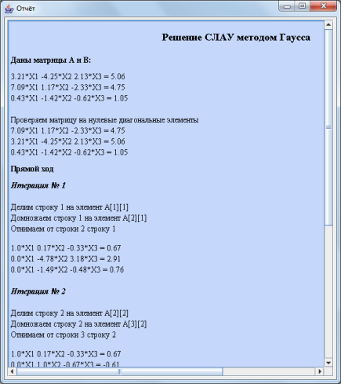

Решение СЛАУ методом Гаусса
Практическая часть
Теоретическая часть
Метод Гаусса относится к классическому методу решения СЛАУ. Он является точным методом
решения СЛАУ. Если матрица не вырожденная, то есть ее
определитель не равен нулю, то такая система имеет решение и оно единственно.
Посчитаем этот определитель и убедившись, что он не равен нулю будем решать дальше. Если он равен нулю,
то программа не будет решать дальше и выдаст сообщение об ошибке.
Решение состоит из двух этапов: прямой ход и обратный ход. На первом этапе необходимо привести разширенную матрицу
к треугольному виду путем элементарных преобразований. А именно, необходимо получить нули под главной диагональю.
После того, как нули получены, переходим ко второму этапу решения - осуществляем так называемый обратный ход.
Находим неизвестные в обратном порядке. Из последнего уравнения находим
xn и подставляем его в n-1 уравнение для того, чтобы найти
xn-1 и т.д. до тех пор, пока не будет найдено
x1. Тогда система уравнений будет решена. Рассмотрим это на практическом примере.
Практическая часть
Пошаговые действия |
Пояснения к действиям |
|  | 1. Заходим в программу. Появляется окно, показанное на рисунке. Выбираем категорию методов "Методы линейной алгебры" Выбираем метод "Решение СЛАУ методом Гаусса". Нажимаем кнопку "PUSH". |
|  | 2. Появляется окошко, показнное на рисунке слева. В соответсвующем поле вы задаете размерность матрицы, можете выбрать ширину ячеек будущей таблицы и задать количество знаков после запятой в корнях уравнений, которые получатся после решения системы. После чего необходимо нажать кнопку "Применить". |
|  | 3. На следующем этапе появляется таблица для ввода коэффициентов при неизвестных. Название столбцов подсказывает нам какие ячейки соответствуют коэффициентам при неизвестных. В столбец b, расположенный на экранной форме слева, вводятся соотвествующие правые части уравнений. После того, как все данные были введены нужно нажать кнопку "Решить". |
|  | 4. После выполнения всех действий, описанных выше, внизу экранной формы в поле "Решение" появится таблица с найденными кормнями заданной системы линейных уравнений. |
|  | 5. После того, как вы получили ответ, можно просмотреть отчет, где предоставлено поэтапное решение. Для этого необходимо в главном меню программы, расположенном на верху экранной формы выбрать пункт "Отчет/Просмотр отчета". Вы увидите окно, расположенное слева. Также можно сохранить этот отчет нажав кнопку главного меню "Отчет/Сохранить отчет". |
 |
6. Если решение примера может пригодится вам в будущем, вы можете сохранить его с помощью конпки меню "Файл/Сохранить". В окне, которое появится(оно показано на рисунке слева) необходимо выбрать папку, в которую он сохранится и написать название. |